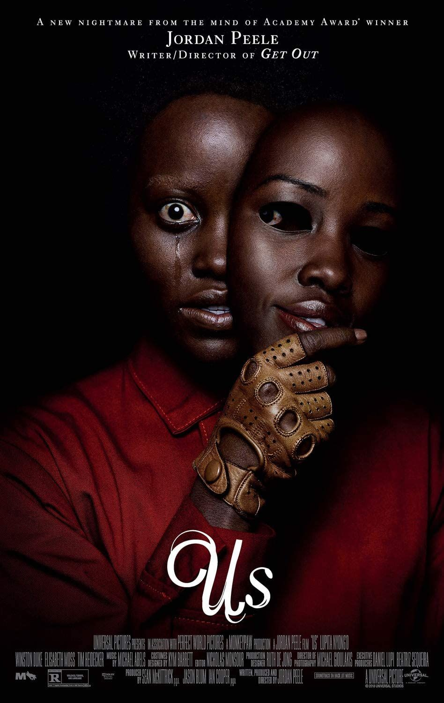
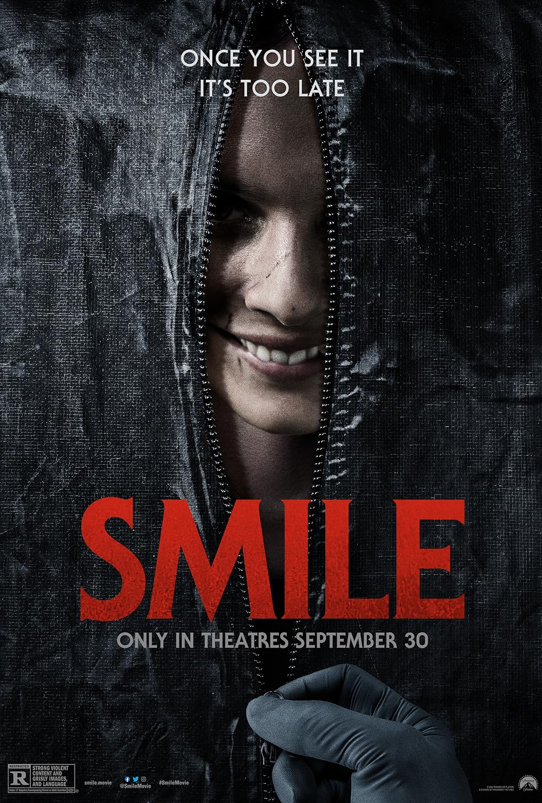

The Girl On The Train
"The Girl on the Train" is a psychological thriller film based on the bestselling novel by Tate Taylor. Rachel Watson becomes entangled in a missing person investigation after witnessing a couple from the train. As she delves deeper into the mystery, she uncovers dark secrets and faces her own demons, ultimately delivering suspense, redemption, and psychological depth.

Us
"Us" is a horror-thriller film directed by Jordan Peele. The Wilson family encounters terrifying doppelgängers while on vacation. These sinister doubles, known as "The Tethered," are determined to kill their counterparts. As the Wilsons fight for survival, they uncover disturbing truths. With its eerie atmosphere, thought-provoking themes, and twists, "Us" delivers chilling experience.
Shutter Island
"Shutter Island" is a gripping psychological thriller directed by Martin Scorsese, adapted from Dennis Lehane's novel. U.S. Marshal Teddy Daniels embarks on a harrowing investigation into a patient's disappearance from a remote psychiatric facility on Shutter Island. With its eerie atmosphere, complex characters, and unexpected twists, "Shutter Island" keeps viewers captivated until the shocking conclusion.

Smile
"Smile" by Parker Finn follows Dr. Rose Cotter, a psychiatrist whose life is disrupted by a chilling incident involving a patient. As Rose confronts haunting visions and escalating paranoia, she unravels enigmatic events around her. With its intricate plot and compelling characters, "Smile" promises a captivating, suspenseful reading experience, brimming with twists and turns.

Malignant
"Malignant" by James Wan follows Madison, a young woman plagued by haunting visions of strangers' murders. As these visions intensify, Madison is driven to uncover their truth and save the victims, revealing sinister revelations from her own past. With spine-chilling suspense, this horror-thriller promises readers a gripping journey into terror and mystery, keeping them on the edge until the end.